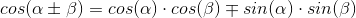
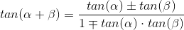

Sum Difference Identity
The Sum and Difference Identity is our most complicated identity, but is also out most useful one. It allows us to solve for exact points on the unit circle as long as we can break them down into our standard reference angles.
You can arrive at the sum and difference Identity by analyzing the relationship between angles on the unit circle and the distance between their endpoints.
sin

The same process can also apply to cos and tan
cos
tan
